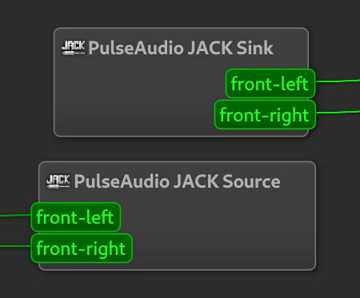

Setting up Jack Audio Connection Kit for Dummies
This guide is meant to be an easy walkthrough of how to install, configure and use JACK on GNU/Linux. Please read it carefully to not miss any steps.Installing the necesssary packages
To get started, you need to install the following packages:- jackd2
- qjackctl
- pavucontrol
- pulseaudio-module-jack
System configuration
In order to get the best performance from JACK, you will need to configure your system to allow JACK to run in realtime mode. First of all, you need to add some lines to a config file. Simply copy this command and run it from the command line. It will ask for you password.echo "@audio - rtprio 95 @audio - memlock unlimited" | sudo tee -a /etc/security/limits.confThen you'll need to create an audio user.
sudo groupadd audioThen you'll need to add your user to it, so run this command with your username.
usermod -a -G audio your_usernameYou will need to log out and in again or reboot for the changes to take effect.
Releasing audio device
On most distros, audio devices are accessed by pulseaudio by default. You will need to tell pulseaudio to stop using the device so that it can be used by JACK. To do so, follow these simple steps:- Open PulseAudio Volume Control
- Click the Configuration tab
- Find the device you want to use with JACK
- Set its Profile to Off
Configuring QjackCtl
Open up QjackCtl and click Setup. Make sure you are in the Settings tab and under that in the Parameters tab.You will be presented with several parameters. I'll quickly guide you though the most important ones.
The Driver is the backend that JACK uses to talk to hardware. It is almost always just set to alsa.
The Realtime checkbox makes JACK run in realtime mode, which makes it more reliable and results in less Xruns (over/underruns, audible pops and clicks).
The Interface option selects what audio device to use. If you want to use separate interfaces for input and output, you can do so under the Advanced tab.
Leave MIDI Driver set to none if you're not familiar with JACK MIDI yet.
The Sample Rate is pretty self explanatory. You can set it as higher than your hardware's sample rate and JACK will use resampling, but I recommend you leave it at your hardware's limit. If you don't know what you hardware supports, leave it at 48000. Frames/Period and Periods/Buffer define the buffer size that JACK uses. This is the chunk of audio that JACK processes at a time. A smaller buffer size will result in less latency but it can increase the amount of Xruns, so you'll hear more pops and clicks. This should be adjusted to your hardware capabilities and how important clean audio is to your use case. A starting point is 256 Frames/Period at 2 Periods/Buffer.
In the bottom right corner, you can see the Latency that your choice of buffer size produces.
Test if JACK works with VLC
VLC supports playback using JACK. To enable it, under Tools click Preferences and open the Audio settings. Under Output select JACK audio output as the Output module. Close and reopen VLC for it to take effect.Now you should be able to play audio with VLC when using JACK.
Using PulseAudio with JACK
I wrote a script that starts a bridge between PulseAudio and JACK that you can use applications using PulseAudio while running JACK.Click here to download it. Move it to whereever you want, but I recomment you put it in your home folder.
Rightclick the script and click properties. Under Permissions you will need to enable the Allow execution.
In the QjackCtl Setup, click the Options tab and enable Execute script after startup. Click the 3 dot button on the right and select the script you downloaded. Click Apply and OK and restart JACK and you should be able to get audio from JACK.
To verify that the link loaded succesfully, if you click Graph in QjackCtl you should see these 2 boxes:

Autostarting JACK
If you wish to automatically start JACK when you log into your user, here is how to do it.Open the QjackCtl setup. Click the Misc tab. Under Other enable Start JACK audio server on application startup.
Then run this command to add a shortcut for QjackCtl to the autostart folder.
cp /usr/share/applications/qjackctl.desktop ~/.config/autostart/qjackctl.desktopNow QjackCtl should start automatically when you log in.